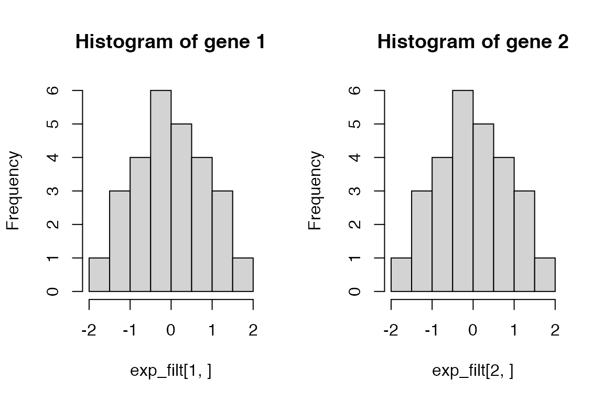
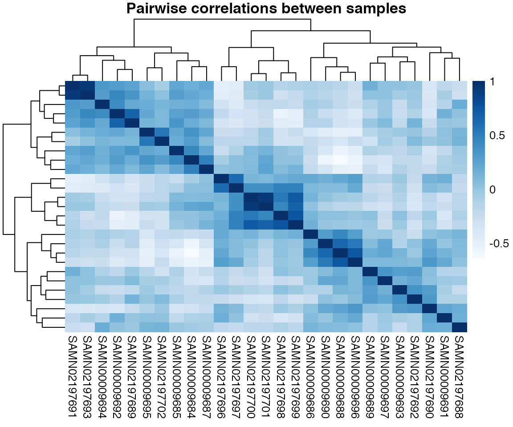
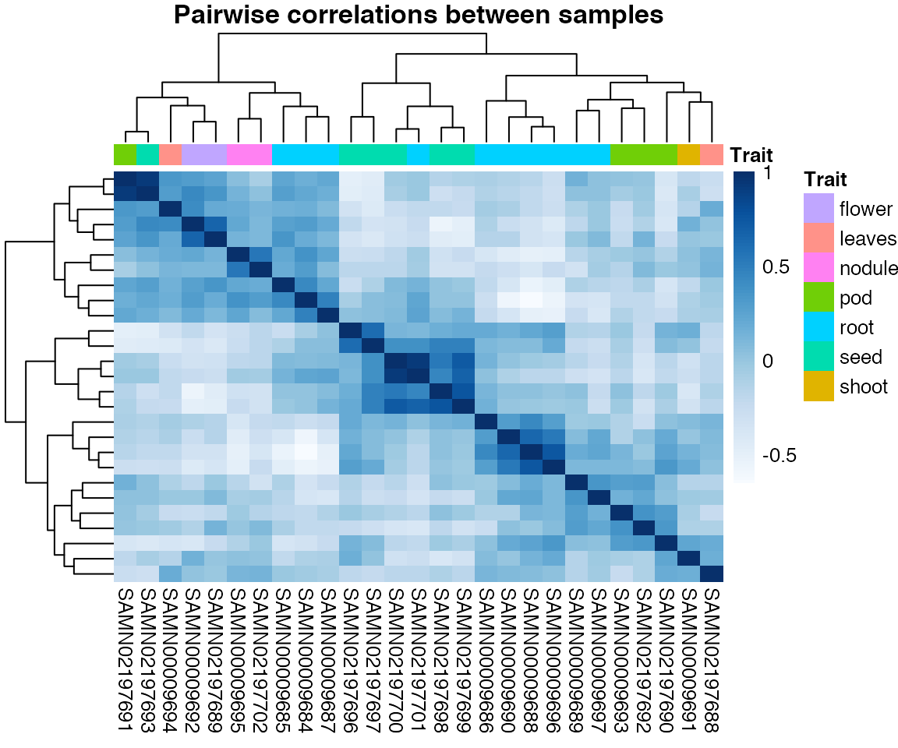
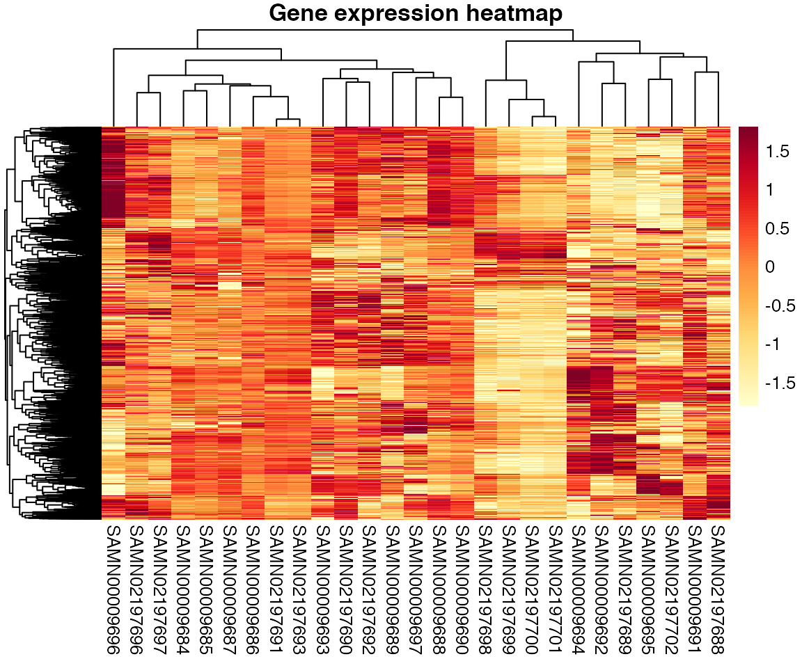
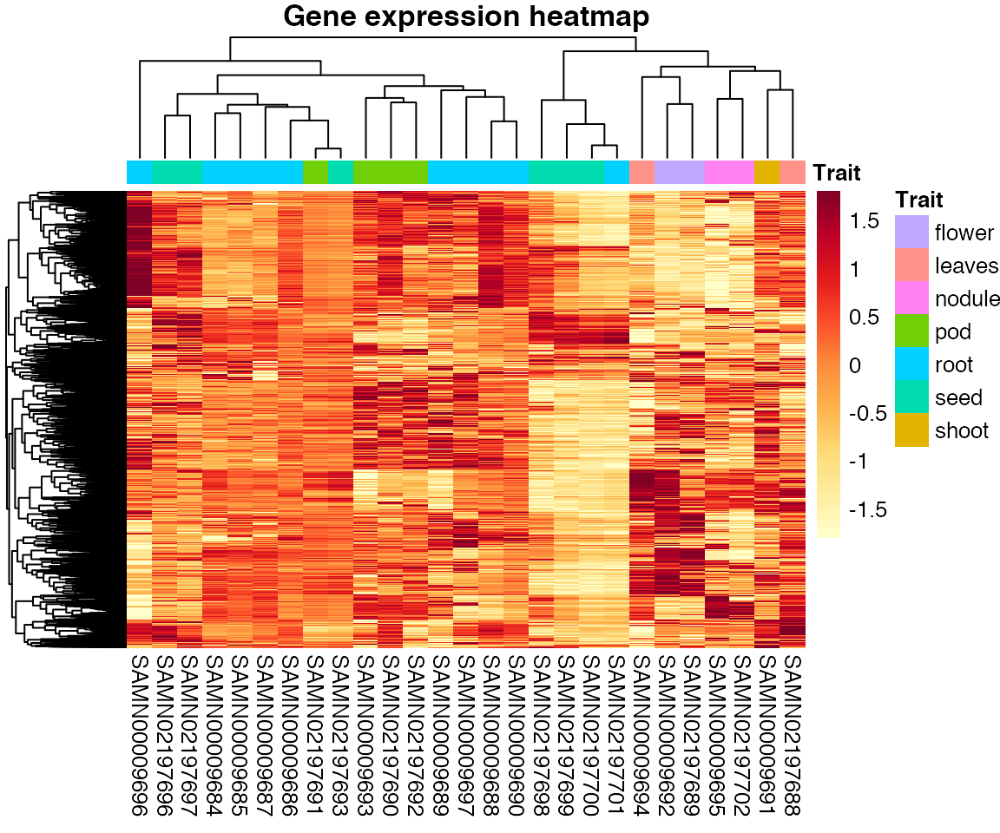
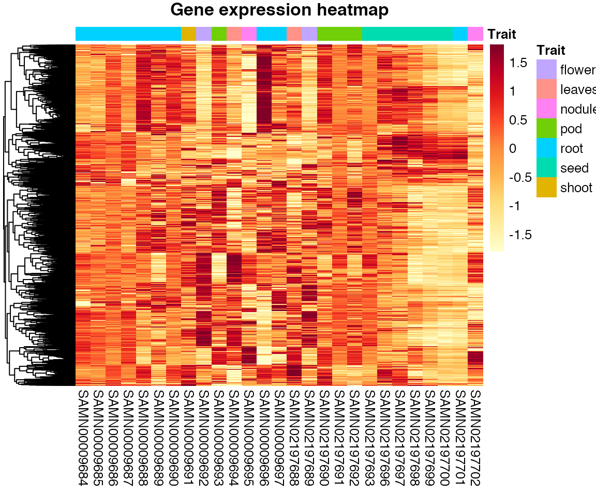
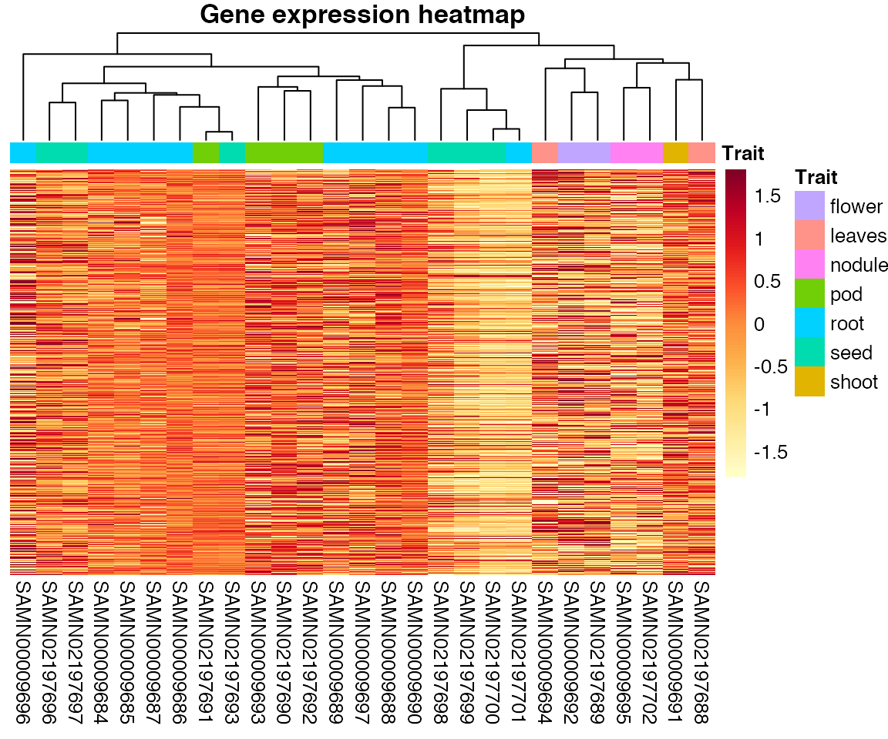
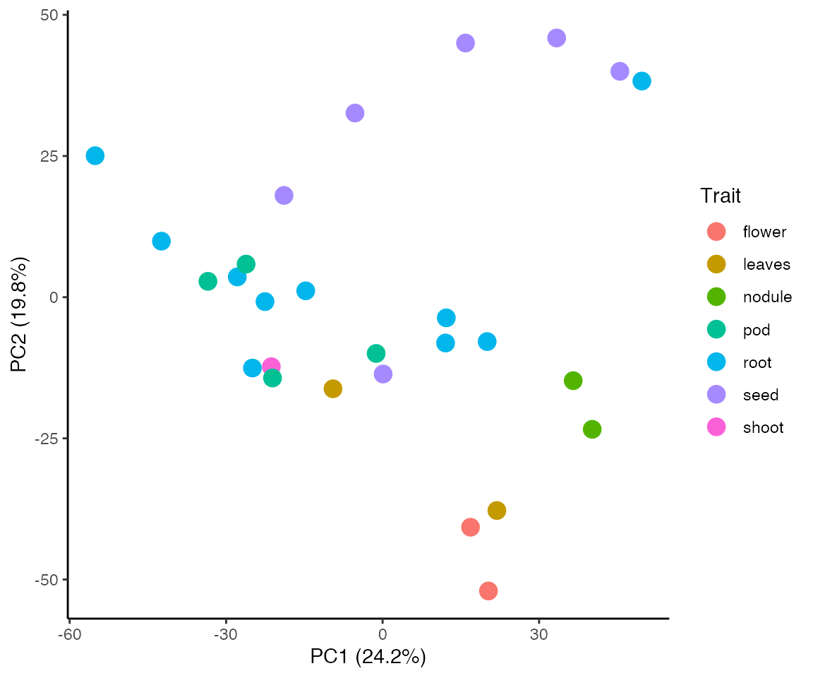

vignettes/BioNERO.Rmd
BioNERO.RmdFor this tutorial, we will use soybean gene expression data in TPM, which was downloaded from the Soybean Expression Atlas (Machado et al, 2020). This expression resource is very big, and analyzing all the available RNA-seq samples (n=1298) would be very time-consuming. For simplicity, we will use only a subset of the data base. The subset we will use comprises RNA-seq data generated by Libault et al, 2010 and Severin et al, 2010.
Each of the two TPM expression table is a different tab-delimited file. The first column contains gene IDs and the other columns contain the expression values for each sample. First, we will read both files to R and combine them into a single data frame.
exp <- dfs2one(mypath = "./TPM_data") metadata <- read.table("metadata.txt", header=T, sep="\t", stringsAsFactors = FALSE) dim(exp) ## [1] 56044 28 head(exp) ## SAMN00009684 SAMN00009685 SAMN00009686 SAMN00009687 ## Glyma.01G000100 0.000000 0.000000 0.000000 0.000000 ## Glyma.01G000200 0.000000 0.000000 0.000000 0.000000 ## Glyma.01G000300 4.446539 3.105494 3.125155 3.470989 ## Glyma.01G000400 1.323173 0.000000 0.000000 0.000000 ## Glyma.01G000500 0.000000 0.000000 0.000000 0.000000 ## Glyma.01G000600 3.286091 3.118817 2.473931 2.790083 ## SAMN00009688 SAMN00009689 SAMN00009690 SAMN00009691 ## Glyma.01G000100 0.000000 0.000000 0.000000 0.000000 ## Glyma.01G000200 0.000000 0.000000 0.000000 0.000000 ## Glyma.01G000300 4.263587 3.347583 3.678279 6.868057 ## Glyma.01G000400 5.381255 1.270567 2.115066 2.944164 ## Glyma.01G000500 0.000000 0.000000 0.000000 0.000000 ## Glyma.01G000600 4.113677 2.045503 6.997648 4.944498 ## SAMN00009692 SAMN00009693 SAMN00009694 SAMN00009695 ## Glyma.01G000100 0.000000 0.000000 0.000000 0.000000 ## Glyma.01G000200 0.000000 0.000000 0.000000 0.000000 ## Glyma.01G000300 7.594278 2.444403 4.689396 3.067142 ## Glyma.01G000400 2.115948 0.000000 0.000000 0.000000 ## Glyma.01G000500 0.000000 0.000000 0.000000 0.000000 ## Glyma.01G000600 0.356737 1.073550 1.875560 0.000000 ## SAMN00009696 SAMN00009697 SAMN02197688 SAMN02197689 ## Glyma.01G000100 0.000000 0.000000 28.658333 0.000000 ## Glyma.01G000200 0.000000 0.000000 0.000000 0.000000 ## Glyma.01G000300 6.685717 4.667017 8.875157 4.915844 ## Glyma.01G000400 4.219975 0.000000 0.000000 0.000000 ## Glyma.01G000500 1.025139 0.000000 0.000000 4.021842 ## Glyma.01G000600 7.141623 3.121840 5.558067 7.048468 ## SAMN02197690 SAMN02197691 SAMN02197692 SAMN02197693 ## Glyma.01G000100 0.000000 0.000000 9.461721 0.000000 ## Glyma.01G000200 0.000000 0.000000 0.000000 0.000000 ## Glyma.01G000300 5.521244 6.410473 6.021127 6.410473 ## Glyma.01G000400 0.000000 0.000000 0.000000 0.000000 ## Glyma.01G000500 2.381000 0.000000 0.000000 0.000000 ## Glyma.01G000600 5.142537 11.833758 5.998980 11.833758 ## SAMN02197694 SAMN02197696 SAMN02197697 SAMN02197698 ## Glyma.01G000100 0.000000 10.047276 4.202899 0.000000 ## Glyma.01G000200 0.000000 0.000000 0.000000 0.000000 ## Glyma.01G000300 5.890313 6.437370 5.101789 7.128838 ## Glyma.01G000400 0.000000 3.253933 1.499856 5.291486 ## Glyma.01G000500 0.000000 0.000000 0.568418 1.094704 ## Glyma.01G000600 6.203266 8.285732 5.096749 4.928969 ## SAMN02197699 SAMN02197700 SAMN02197701 SAMN02197702 ## Glyma.01G000100 0.000000 0.000000 0.000000 2.233557 ## Glyma.01G000200 0.000000 0.000000 0.000000 0.000000 ## Glyma.01G000300 2.848676 3.202543 3.202543 3.415944 ## Glyma.01G000400 0.000000 0.000000 0.000000 0.000000 ## Glyma.01G000500 1.018565 0.000000 0.000000 0.000000 ## Glyma.01G000600 1.091161 1.012614 1.012614 3.286954 head(metadata) ## Sample Tissue ## 1 SAMN00009684 root ## 2 SAMN00009685 root ## 3 SAMN00009686 root ## 4 SAMN00009687 root ## 5 SAMN00009688 root ## 6 SAMN00009689 root
The combined data frame contains 56044 genes and 28 samples.
This section is suitable for users who want to have more control of their data analysis, since they can inspect the data set after each pre-processing step and analyze how different options to the arguments would affect the expression data.
Step 1: Removing missing values. By default, remove_na() will replace NAs with 0. Users can also replace NAs with the mean of each row.
Step 2: Removing non-expressed genes. Here, we will remove every gene whose median value is below 1. For other options, see ?remove_nonexp.
exp_filt <- remove_nonexp(exp_filt, method="median", min_exp = 1) dim(exp) ## [1] 56044 28
After step 2, the number of genes reduced to 56044.
Step 3 (optional): Filtering genes by variance. It is reasonable to remove genes whose expression values do not vary much across samples, since we often want to find genes that are more or less expressed in particular conditions. Here, we will keep only the top 4000 most variable genes for simplicity. Users can also filter by percentile (e.g. the top 10% most variable genes).
exp_filt <- filter_by_variance(exp_filt, n=4000)
Step 4: Removing outlying samples. There are several methods to remove outliers. We have implemented the Zk (standardized connectivity) method, which is a network-based approach to remove outlying samples. This method has proven to be more suitable for network analysis, since it can remove outliers that other methods (such as hierarchical clustering) cannot identify. By default, BioNERO considers all samples with Zk < 2 as outliers, but this parameter is flexible if users want to change it.
dim(exp) ## [1] 56044 28 exp_filt <- ZKfiltering(exp_filt, cor_method = "pearson") ## [1] "Number of samples that were removed: 1" dim(exp) ## [1] 56044 28
Step 5: Adjusting for confounding artifacts. This is an important step to avoid spurious correlations resulting from confounders. The method was described by Parsana et al, 2019, who developed a principal component (PC)-based correction for confounders. After correction, the expression data is quantile normalized so that every gene follows an approximate normal distribution.
exp_filt <- PC_correction(exp_filt) ## [1] "Calculating number of PCs to be removed..." ## [1] "Number of PCs estimated to be removed: 3" ## [1] "Removing PCs that contribute to noise..."
Let’s check if genes really follow an approximate normal distribution.
par(mfrow=c(1,2)) hist(exp_filt[1,], main="Histogram of gene 1") hist(exp_filt[2,], main="Histogram of gene 2")

Alternatively, users can pre-process their data with a single function. The function exp_preprocess is a wrapper for the functions remove_na, remove_nonexp, filter_by_variance, ZKfiltering and PC_correction. The arguments passed to exp_preprocess will be used by each of these functions to generate a filtered expression data in a single step.
exp_filt2 <- exp_preprocess(exp, variance_filter = TRUE, n=4000) ## [1] "Number of samples that were removed: 1" ## [1] "Calculating number of PCs to be removed..." ## [1] "Number of PCs estimated to be removed: 3" ## [1] "Removing PCs that contribute to noise..." dim(exp_filt) == dim(exp_filt2) ## [1] TRUE TRUE finalexp <- exp_filt2 # save the filtered expression data a single object
BioNERO includes some functions for easy data exploration. These functions were created to avoid having to type code chunks that, although small, will be used many times. Our whole idea here is to make the user experience with biological network analysis as easy and simple as possible.
Plotting heatmaps: the function plot_heatmap plots heatmaps of correlations between samples or gene expression in a single line. Users can use their preferred RColorBrewer’s palette, hide/show gene names, and activate/deactivate clustering for rows and/or columns.
# Simple heatmap of sample correlations plot_heatmap(finalexp, type = "samplecor")

# Add sample descriptions plot_heatmap(finalexp, type = "samplecor", col_metadata = metadata)

# Simple heatmap of gene expression plot_heatmap(finalexp, type="expr")

# Add sample descriptions plot_heatmap(finalexp, type="expr", col_metadata = metadata)

# Remove sample clustering plot_heatmap(finalexp, type="expr", col_metadata = metadata, cluster_cols=FALSE)

# Remove gene clustering plot_heatmap(finalexp, type="expr", col_metadata = metadata, cluster_rows=FALSE)

Principal component analysis (PCA): the function plot_PCA performs a PCA and plots PC1 vs PC2 (by default), as well the percentage of variance explained by each PC. The users can also choose to plot PC1 vs PC3 or PC2 vs PC3. Besides, if interactive = TRUE, the function will display an interactive PCA plot.

# Interactive PCA plot_PCA(finalexp, metadata, size=4, interactive=TRUE)
Other functions exist for exploratory purposes, such as plot_expression_profile() and plot_ngenes_per_module(), but they were made to be used after gene coexpression network reconstruction or for a set of genes of interest.
Now that we have our filtered and normalized expression data, we can reconstruct a gene coexpression network (GCN). First of all, we need to identify the most suitable \(\beta\) power that makes the network satisfy the scale-free topology. We do that with the function SFT_fit. Correlation values are raised to a power \(\beta\) in order to amplify the distances between correlations and, hence, to make the module detection algorithm more powerful. The higher the value of \(\beta\), the closer to the scale-free topology the network is. However, a very high \(\beta\) power reduces mean connectivity, which is not desired. To solve this trade-off, we usually pick the lowest \(\beta\) power above a certain threshold (by default in SFT_fit, 0.8). This avoids reducing dramatically the mean connectivity and makes the network topology close to the scale-free topology.
power <- SFT_fit(finalexp, cor_method="pearson") ## Power SFT.R.sq slope truncated.R.sq mean.k. median.k. max.k. ## 1 1 0.77300 6.8900 0.899 2230.0 2270.0 2590 ## 2 2 0.53900 2.0700 0.891 1360.0 1380.0 1820 ## 3 3 0.22300 0.8730 0.852 885.0 892.0 1350 ## 4 4 0.08310 0.4230 0.879 610.0 605.0 1050 ## 5 5 0.00248 0.0571 0.868 440.0 430.0 852 ## 6 6 0.04960 -0.2210 0.838 330.0 316.0 707 ## 7 7 0.21100 -0.4370 0.845 255.0 238.0 605 ## 8 8 0.40900 -0.6410 0.861 202.0 182.0 531 ## 9 9 0.59300 -0.8240 0.888 164.0 141.0 472 ## 10 10 0.68900 -0.9520 0.908 135.0 112.0 426 ## 11 11 0.75400 -1.0600 0.923 113.0 90.6 389 ## 12 12 0.78400 -1.1500 0.924 95.8 74.7 357 ## 13 13 0.81000 -1.2100 0.931 82.1 62.8 330 ## 14 14 0.82500 -1.2700 0.931 71.1 52.9 306 ## 15 15 0.81600 -1.3400 0.913 62.0 44.6 285 ## 16 16 0.84500 -1.3800 0.929 54.6 37.9 267 ## 17 17 0.84800 -1.4300 0.921 48.3 32.3 250 ## 18 18 0.85100 -1.4700 0.921 43.0 27.7 235 ## 19 19 0.86300 -1.4800 0.927 38.5 23.8 222 ## 20 20 0.87500 -1.4900 0.936 34.7 20.5 210 power ## [1] 13
As we can see, the optimal power is 13. If the users want to visually inspect the simulation of different \(\beta\) values, the function SFT_fit automatically saves a PDF figure containing this information.
Now, we can use the power calculated by SFT_fit to reconstruct the GCN. The function exp2net reconstruct a GCN and outputs a list of 5 elements, each of which can be used by other functions in the analysis.
net <- exp2net(finalexp, net_type="signed", SFTpower=power, cor_method="pearson") ## [1] "Calculating adjacency matrix..." ## [1] "Removing diagonals..." ## [1] "Calculating topological overlap matrix (TOM)..." ## ..connectivity.. ## ..matrix multiplication (system BLAS).. ## ..normalization.. ## ..done. ## [1] "Detecting coexpression modules..." ## [1] "Calculating module eigengenes (MEs)..." ## [1] "Merging similar modules..." ## mergeCloseModules: Merging modules whose distance is less than 0.2 ## multiSetMEs: Calculating module MEs. ## Working on set 1 ... ## moduleEigengenes: Calculating 35 module eigengenes in given set. ## multiSetMEs: Calculating module MEs. ## Working on set 1 ... ## moduleEigengenes: Calculating 19 module eigengenes in given set. ## multiSetMEs: Calculating module MEs. ## Working on set 1 ... ## moduleEigengenes: Calculating 17 module eigengenes in given set. ## Calculating new MEs... ## multiSetMEs: Calculating module MEs. ## Working on set 1 ... ## moduleEigengenes: Calculating 17 module eigengenes in given set. ## [1] "Calculating intramodular connectivity..." names(net) ## [1] "adjacency_matrix" "MEs" "genes_and_modules" ## [4] "kIN" "moduleColors" "correlation_matrix"